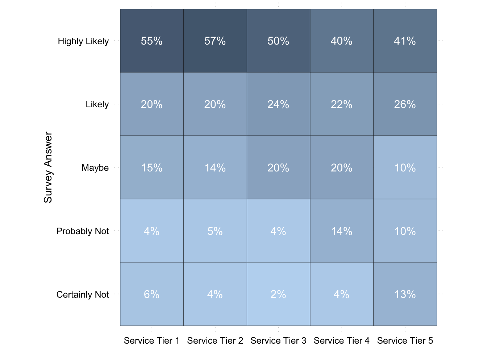

| Responses | Percent | |
|---|---|---|
| Highly Likely | ||
| Likely | ||
| Maybe | ||
| Probably Not | ||
| Certainly Not | ||
| TOTAL |
2 Decision-Making Basics
2.1 Learning goals
- Introduce, apply, and evaluate a template for making data-driven decisions
- Highlight the importance of connecting analysis goals to decision-making goals
- Introduce a taxonomy of different types of analyses based on the type of questions that can be answered
- Discuss mental patterns useful for critically evaluating analyses and reducing analysis errors
2.2 Rational decision-making
As stated in Chapter 1, this course is about how to make sensible decisions with the help of data. Before we dive into doing data analysis though, we first want to discuss what “sensible decision-making” means. So we first need to talk about the building blocks of a decision problem. Some of the terms we’ll discuss (e.g., minimax) may sound strange or complicated. But, all we are doing is presenting some basic reasoning for how to best structure an analysis and draw conclusions from it.
The first thing to note is that most important business decisions involve some degree of uncertainty. Think of uncertainty simply as missing knowledge about past, present, or future events (Walkter et al. 2003). The knowledge that you would need in order to choose the best action under various potential actions.
We care about uncertainty because whenever there is uncertainty, there is a chance to make a mistake or make a sub-optimal choice. Also, in lots of real-world cases, some mistakes are more costly than others. For example, when prescribing a drug to a patient, the mistake “the drug didn’t work” is potentially less “costly” to the patient than the mistake “the drug had some serious side-effects on the patient”. This implies that a useful decision rule suggests not only an expected best action out of a set of actions. It also accounts for the costs of different kinds of potential mistakes.
Not always will we be able to quantify costs or probabilities of making mistakes though. That’s fine, we will still need to come up with simple decision rules that will help us make sensible decisions. Think of rules like: “If this course of action still performs best in the worst case, then let’s do it” (called maximin rule).
Ideally, though, we’d like to reduce the chance of making (costly) mistakes and that implies we want to reduce uncertainty in our decision-making. Data is the key input to reducing uncertainty. But data alone is not enough. We also need assumptions. Why? That will become apparent during the course. For now, let us discuss the decision-making process.
2.3 A decision-making process framework
The first part of the course is about learning a framework. Why spend a full chapter on it? Because data analysis is not easy. It is easy to get stuck and stare at the data, not seeing the forest for the trees. Over the years of teaching and practicing data analysis in various forms, we have seen it happen frequently and to students at all levels - from bachelor to PhD students. It happens to us too still. Especially for beginners, the best remedy against getting stuck is to have a helpful framework of procedures. So, let us try to give you one.
If you google “business decision-making” then you will at some point stumble upon a process picture like this one:
Figure 2.1 (based on Schoenfeld (2010)) shows our version of what a rational decision-making process looks like. While very stylized, this is not a bad schema for trying to find answers to important business problems. Let us explain each step in turn.
2.3.1 Detect the problem
Sometimes the problem is clear. Designing a new sales forecasting model or optimizing inventory are problems that are usually handed to you. However, sometimes we first need to realize that there is a problem in the first place (e.g., production quality is slowly decreasing). This does not always happen automatically. Well-designed monitoring systems that collect data and measure developments across multiple dimensions often throw the first warning signs that something needs to be looked at. (And somebody had to come up with the idea that it might be a sensible business precaution to install such a monitoring system.)
2.3.2 Identify the problem
To us, this is the most important step. Essentially, here we clarify what we want to know. Define what the current situation looks like. Then define the ideal outcome we are looking for. Or in Controlling terms: compare the actual performance to the performance standards. Describe the difference and then try to figure out what is causing the difference. The root-cause analysis will give you a path towards the problem.
It is key to slow down and properly identify what the problem really is. Do not go in blind and start digging. Even with exploratory analyses, first step back and take a moment to go through the steps described in the previous paragraph. This is not always easy. For example, is a sales decline because of demotivated salespeople or are salespeople demotivated because the product is outdated? It can easily happen that we mistake symptoms for causes. One of the most important messages of this chapter is: Guide your analysis by specifying the goal clearly and asking a succession of questions that are aimed at bringing you closer to the goal. Ask questions, questions, questions. Every conversion you will have with relevant people will give you some answers, but also trigger new questions. Talking to people is important because you cannot be the expert in every domain, so you build your analysis on their expert knowledge.
Often, we need to gather and analyze a significant amount of data to better understand what is happening. A lot of our data analysis will happen at this stage. Consider the following simple example.
You are working for a technology vendor that not only sells the technology but also service packages. The service packages are a big part of overall revenues. The CFO of the company comes to you and mentions that one client reached out to him being unhappy and not wanting to renew its service package. She asks you to look into what the overall satisfaction with the service is. You open the data on the latest customer survey you ran and look at the answers:
Table 2.1 seems to suggest that 12% of respondents indicate that they are “probably not” or “certainly not” renewing the service package. You know from experience that such survey answers often overstate the true dropout rate (there is a well-documented gap between hypothetical intentions (“What do you plan to do?”) and real actions taken later on (“What did you actually do?”)). You also know that the numbers are in line with survey responses from previous years. So you could go to the CFO and tell her that nothing seems to have changed.
You don’t. Your company has different service tiers and you decide to split the survey responses by service tier. You are presented with the following data:
| Service Tier 1 | Service Tier 2 | Service Tier 3 | Service Tier 4 | Service Tier 5 | |
|---|---|---|---|---|---|
| Highly Likely | |||||
| Likely | |||||
| Maybe | |||||
| Probably Not | |||||
| Certainly Not | |||||
| TOTAL |
You can see that most service tiers are fine. However, Table 2.2 shows that the high tiers (tier 4 and 5, the most expensive ones) have significantly higher frequencies of lower responses. You found a meaningful pattern. This is a very simple example of what data analytics is all about: finding meaningful patterns in raw data. (see Chapter 1). We will have much more to say about this in Chapter 3.
You create a quick visualization that shows the pattern more clearly. This pattern was not obvious in the overall survey answers in Table 2.1. The reason is that there are fewer responses for high-tier service package than for low-tier packages. The pattern is this much more obvious in percentage terms (Figure 2.2):

Stop for a moment and consider how you would have possibly spotted this pattern if you had not known it existed (an unknown unknown). How could you have found it? We used some expert knowledge (there are multiple service tiers) and we had some type of mental model of the customers. That model suggested that customer satisfaction might vary across tiers (maybe high-tier customers are more demanding). Both led us to entertain the idea that mismatches might differ across tiers. We point this out to highlight the importance of models. Only if you combine the right inquisitive mindset with a bit of background/expert knowledge, will you be able to properly identify problems.
You probably do not want to stop right there either. Before going to your boss to tell her the news, you might want to better understand what is going on. In other words, we have a guiding question for the next analysis: What might be the reason for the low survey score for the expensive tiers? And how do we figure that out? Again, we now need to come up with a mental model of how the customer response came to pass and start testing for indications that are either consistent or inconsistent with this model - rinse and repeat.
The general steps remain the same for all types of decision problems you might face. If you need to come up with a sales forecast then “identifying the problem” becomes clarifying what exactly you are supposed to forecast (e.g., all sales? product, service, and advertising? How far into the future? On a yearly or monthly basis?). Often the right answers to those questions can be found by asking a slightly different question - one of purpose. “What is the sales forecast for?”. You might have come across this or a similar question in class or at work: You worked out a nice solution for an assignment or a project, and then you get the question “But what exactly does your solution address?” and then it sets you back to the beginning where you have to dig deeper what the actual decision problem is.
The last example is thus also there to illustrate the power of asking the right questions. In fact, one can structure a decision problem into a series of questions to be answered. Example questions for this stage of the process include:
- Who is doing what to whom?
- Where/When does the problem appear to arise?
- What is the process behind what we observe?
- What is the reason for the suspected reason?
- What do we need to solve this problem?
These question highlight again the need to consult other people, how should you know all of it?
2.3.3 Establish decision criteria
To make good decisions, we need to have an idea of what goal we are working towards! Thus, once we have a better grip on what exactly the issue is, we need to set some criteria that define what a good solution should look like.
It is hard to give good guidance here because these criteria are usually problem specific. For example, a sales forecast should have “expected accuracy” as a criterion to accept a forecast or not. But there are other potential criteria too. Typical decision criteria considered are financial benefits, resource usage, quality, riskiness, acceptability to others, etc. In the case of the sales forecast, another criterion might be complexity. Are we willing to entertain forecasts based on hard-to-reason or even black-box machine learning models or do we only entertain forecasts based on models we can reason about? This might be an important decision criterion depending on the costs of forecast errors and who is going to be held accountable for decisions made based on the forecast.
Again, this step can be quite tricky, but we believe it is vital to establish criteria at this stage of the process. Without criteria to describe the goal we are working towards, there is a big risk of wasting serious time and effort into designing solutions that will be thrown away immediately.
If there are multiple criteria, then it is important to discuss how to weigh them. In the forecasting example, accuracy may receive 70% and complexity 30%. Multi-criteria decision-making is not an easy topic, because the notion of a “best solution” becomes non-trivial (Pomerol and Barba-Romero 2000; Aruldoss, Lakshmi, and Venkatesan 2013). It is not always obvious what the right weights should be. Because of time constraints and scope, we likely won’t go into much detail here. But we want to raise awareness for the issue and cover some simpler examples.
Typical questions you might want to ask yourself at this stage:
- How many resources can we spare?
- What is affected by the possible alternatives?
- Who or what might be impacted?
- What do we need to trade off (e.g., costs versus benefits - “We want to cheap, but also top-notch and fast”)?
- What cost is more significant for us?
- Possible side-effects when implementing the solution?
2.3.4 Develop alternatives
After you have set the relevant criteria for a good solution it is time to come up with potential alternatives that might lead to a solution to the problem at hand.
Creativity is often key here. The insights gathered from a careful root-cause analysis in Step 2: “identify the problem” are usually very useful at this stage too. Developing alternative solutions often involves building and entertaining different mental models of how the problem might have arisen. That is, the cause of your problem is a sensible starting point to solve. Sometimes this is done in brainstorm sessions with the whole team. Imagine you are part of a team and some team members disagree on what the best course of action is. In some cases (e.g., enough resources) it might be the best way forward to run both courses in parallel until one alternative clearly dominates.
This is another step where the large chunk of the data analytics resides. It is required for at least two reasons:
- We need to collect and analyze raw data to develop mental models and propose alternative solutions based on them.
- We need to collect and analyze raw data, and test and evaluate the assumptions underlying the alternative solutions. Are the mental models on which the solutions are resting supported by the data? This is often called diagnostic analysis and the topic of Chapter 4.
- Properly fleshed-out solutions often require data-based inputs.
To give an example of different alternative solutions to a problem requiring data to analyze: imagine you are working for a supermarket chain. The top management is considering expansion strategies and you are charged with forecasting the potential sales of a new market at a new location. Since the chain has never had a store at that location, there is no historical data. Let’s further assume it was decided that there is only limited budget for external data and good solutions need to be transparent in their reasoning. How would you go about this?
Well, you have internal data on the other 140 supermarkets the firm runs. You can, for example, extract a table like this from the company databases:
| Market ID | Market size (m2) | No. Clients | Revenues (€) |
|---|---|---|---|
| 1 | |||
| 2 | |||
| 3 | |||
| 4 | |||
| 5 | |||
| 6 | |||
| 7 | |||
| 8 | |||
| 9 | |||
| 10 |
You know that the location available is ca. 1,200 square meters. That is one reason why your firm is considering setting up a store in that town. You could start by looking at what supermarkets of that size in your portfolio produce in revenues. You start by computing some average statistics:
| Size Group (sqm) | N | Avg. | SD | 5% Perc. | 95% Perc. |
|---|---|---|---|---|---|
| 700 | |||||
| 800 | |||||
| 1000 | |||||
| 1200 | |||||
| 1400 |
The averages (means) are roughly as expected, with bigger stores having more revenues. But not always, The 29 1,200 square meter supermarkets have on average lower revenues than the 1,000 square meter markets.
Does it make sense to just report the mean of 5,674T€ as an estimate of the new market’s revenues? Probably not. The other columns in Table 2.4 give us an indication of the variation among the 1,200 square meter markets. The standard deviation (SD) measures how dispersed the data is relative to the mean. The SD of 3,098T€, circa 3 million euros, is large for a “standard” distance from the mean. We also get a feeling of significant variation when examining the 5% and 95% percentiles. They tell us that 5% of the 29 markets have revenues lower than 1,8 million euros and 5% have revenues higher than 10,5 million euros.1 The important point is that the three descriptives SD, 5%, and 95% percentiles that there is a lot of variation around the mean, and hence a lot to explain. That tells us that “report the mean of similarly sized supermarkets” is not a good potential solution to the problem “provide a sales forecast for a store at the new location”. It is very likely to violate any accuracy-related decision criterion.
We learned from the data that we cannot just look at similarly sized supermarkets we already have. What alternatives do we have? We now need to start entertaining some mental models. You often do this automatically, but we want to highlight the importance of doing this a bit more explicitly. The question we want to start with when building a model is: What would a process look like that generates the outcome we are interested in? (In this case: supermarket revenues). Such a model is also sometimes called a “data-generating process”. A “data-generating process” is called like this because it refers to the underlying mechanisms that produce the data we end up observing. We can start simple. We could split revenues into two determinants: the number of customers served times the average basket size of their shopping (volume times price). And then we think about possible determinants of these two determinants. What would determine the average basket size? The average basket size is probably determined by the average wealth of the customers (do they buy more expensive products) and the amount they buy. The latter can be driven by many things. Are the average customers busy people who eat a lot outside and only buy small quantities? Or do they buy for a whole family, etc.? What would determine how many customers buy in the market? The market size probably plays a role (you are more likely to find what you are looking for) and simply how close the market is to the customer. Then, stores in densely populated areas should have more customers. On the other hand though, it is probably more difficult and more expensive to find a large location for a store in densely populated areas. Thus, there should also be a negative relation between market size and population density in an area. We often like to draw DAGs (directed acyclical graphs) to visualize the data-generating process we have in mind. Figure 2.3 shows one describing our reasoning thus far.
Figure 2.3 just describes our reasoning in a simplified process graph. The node “Loc. lifestyle” is a catch-all for things like: family shopping or commuting frequency, and other things affecting your shopping behavior. For example, consultants jet-setting through the country most of the week will probably not buy many items but more expensive ones. For now, we just put a node like this in here, rather than expanding our thinking on how lifestyle affects shopping behavior.
Often visualizing your mental model like this helps you inspect it. Is our reasoning sound? Have we forgotten anything important? Probably. For example, we do not have competition from other supermarkets in the area in our model. But it is often better to start simple and add more detail later.
We want to test how descriptive this model is for the true data-generating process. Because if it can explain a decent part of the variation that we have observed in revenues of supermarkets of the same size (Table 2.4), then it could give us very helpful guidance on how to make better predictions.
How can we test the model’s descriptive power? We are going into much more detail on how to do this when discussing predictive analytics in Chapter 5. But often you can already get a decent idea with some simple descriptives. You have old data on the population density from previous planning projects readily at hand. It is sorted into categories though. Still, we can expand our descriptive statistics and see how much variation within size and density groups (groups A to E) exists. We only focus on the relevant size category (1,200 square meters) here for ease of exposition, but you should of course always check whether your model holds for all areas of the data.
| Groups: Size (sqm) x Density | N | Avg. | SD | 5% Perc. | 95% Perc. |
|---|---|---|---|---|---|
| 1200 x A | |||||
| 1200 x B | |||||
| 1200 x C | |||||
| 1200 x D | |||||
| 1200 x E |
Compared to the within-group variation shown in Table 2.4, Table 2.5 shows that we already do a better job by considering density in the area as a determinant of revenues. The variation across density categories shows itself in the variation across averages and is sizable (compare it to the mean of 5,674T€ for the 1,200 sqm supermarkets) - which tells us that location density does help to explain revenues. However, the standard deviations (and the 5%/95% percentiles) within each group are still quite large, indicating there is still a lot of variation in revenues that isn’t explained by just density. In simpler terms: “Adding density as a factor reduced the unexplained variance, but there’s still plenty of room to improve the model.” If we can further improve on explained variation, it would be worthwhile to do so.
Let’s assume you also have categories of how wealthy people (groups A to E) are on average in the area around the supermarket. These are also from previous planning projects (never throw away data). We can also expand our descriptives via this potential determinant:
| Groups: Size (sqm) x Wealth | N | Avg. | SD | 5% Perc. | 95% Perc. |
|---|---|---|---|---|---|
| 1200 x A | |||||
| 1200 x B | |||||
| 1200 x C | |||||
| 1200 x D | |||||
| 1200 x E |
Table 2.6 shows that wealth also sorts well within the size category of 1,200 square meter markets in our portfolio. You can even combine all our splits and expand your descriptives by a three-way-split:
| Groups: Size (sqm) x Density x Wealth | N | Avg. | SD | 5% Perc. | 95% Perc. |
|---|---|---|---|---|---|
| 1200 x A x A | |||||
| 1200 x A x C | |||||
| 1200 x A x D | |||||
| 1200 x B x A | |||||
| 1200 x B x B | |||||
| 1200 x B x C | |||||
| 1200 x C x B | |||||
| 1200 x C x C | |||||
| 1200 x C x D | |||||
| 1200 x D x A | |||||
| 1200 x D x C | |||||
| 1200 x E x A | |||||
| 1200 x E x B | |||||
| 1200 x E x C | |||||
| 1200 x E x D | |||||
| 1200 x E x E |
Now, Table 2.7 starts to become unwieldy. But it looks like the combo density x wealth of the area is important. As we will see in later chapters, regression models and other machine learning approaches essentially do what we did here - only more sophisticated. We are computing conditional means here. Means conditional on a given density and wealth level. More sophisticated models also estimate means (or other statistics) conditional on many possible conditions. The important takeaway here is to realize that we often want to know conditional means in forecasting problems. And as you can see, we can do this to some rudimentary degree just using tables.
We have a problem though: sample size. While It looks like the combo density x wealth of the area is important, we are getting into tricky territory. A lot of the cells in Table 2.7 contain only one supermarket. You can also see that because of N = 1, most do not have a standard deviation associated with them. You can think of the cells with N = 1 as “anecdotes”. It is similar to when a person tells you “In MY experience…” - but what about the other people’s experience? Maybe, if we would have more supermarkets in the “1200 x E x E” category, the average would be very different, and show significant variation. We do not know, we only have one observation. In technical terms, the average is an imprecise estimate of the expected value if the number of observations is small. With N = 1, we basically only have an anecdote. This is even more important for standard deviation and the percentiles. Measures of variation are even more dependent on a decent amount of observations. All this means, that while it seems that density x wealth explains a large amount of variation, we really do not know that for certain. We do not have enough supermarket observations to say much with certainty here. If we would use those cell averages to make predictions, we need to be very cautious. These averages are only “anecdotal” - we cannot have confidence that the pattern in averages represents a generalizable pattern. Thus, using cell averages would probably not yield reliable forecasts. We quickly ran into the issue that for precise extrapolations we need enough data to draw conclusions from.
Still, we need to make a decision whether to further explore building a supermarket at the offered location or not. And we need to decide how to proceed. We have not yet actually proposed any alternatives - any forecasts. From our previous analysis we can draw tentative conclusions: density and wealth in the area most likely matter for supermarket revenues. What next? Remember, guide your analysis by specifying the goal clearly and asking a succession of questions that are always aimed at bringing you closer to the goal. The following questions remain:
- What about lifestyle?
- Do we still want to use this model for forecasting, or do we need to expand or adjust it?
- Given the model we use for forecasting, how do we get the data for lifestyle? We need to collect the necessary data for the new location to make a forecast.
We have not yet tested whether lifestyle matters. We do not have data on that, so if we think this is important, then we need to think about whether collecting the data is worthwhile given our decision criteria and given how precise we would be able to forecast without. When discussing predictive analytics later on we will learn more tools that help us in making such decisions.
Density and wealth seem to explain a decent amount of variation in revenues; we probably want to use the two determinants in our forecast model. But we are quite uncertain whether we can use the averages from our existing categories. One problem might be that we only have categorical data. We have five density categories and four wealth categories. If we could collect data on things like average income and amount of households in a certain radius around our markets, we could potentially get more precise estimates.2
So carrying on with density and wealth, we have a few alternatives. In all we have to also think about how we collect the necessary data on the determinants for the new location:
- We ignore lifestyle, categorize the new location into the existing density and wealth categories and use the average as our forecast, ignoring what we discussed before. For this we need to collect some data on the density and wealth surrounding the new location. We can:
- Infer this from public statistics, if available, and/or
- Pay someone to survey the location and thus generate the data we need.
- We investigate the importance of lifestyle before making any further decisions.
- We ignore lifestyle but explore how we can get better data, ideally continuous data, on density and wealth, then use a linear model (e.g., a regression model) if the relation between the variables turns out to be as roughly linear as Table 2.5 and Table 2.6 suggest. Then, we again need to do the same for the new location and apply the fitted model to the new data.
Which of these three paths is the best to follow next (or in parallel) depends on our decision criteria, which is why it is important to specify them first. For example, imagine that we are asked to deliver a rough estimate by tomorrow for a quick upper-management brainstorming session. Then you do not have time to collect more information. It might be optimal to extrapolate from the cell averages in Table 2.7 to deliver a forecast (including reporting how imprecise this forecast is). However, if this is part of the full feasibility analysis of building that supermarket and you have weeks to finish this (as well as a bigger budget), then spending some time on investigating lifestyle importance is probably worthwhile. The intermediate alternative could be fine too. We ignore lifestyle because density and wealth seem to already explain a lot of variation in revenues across supermarkets.3 But we invest a bit of time and effort measuring these two predictors with more precision and test whether different forecast (resting on more, but defendable assumptions) helps us get more precise estimates and more readily interpretable confidence intervals. This could be the best combination of expected accuracy, uncertainty, and effort if we have a moderate (time) budget.
In summary, what we have done is to start with a simple model, and worked our way forward. How much variation does our simple model capture? Do the expected benefits of extending the model outweigh the costs of doing so? Iterating on these two questions will ultimately lead us to one or more forecasts.
2.3.5 Evaluate alternatives
Even if you only end up proposing one alternative (actually a quite common outcome), you still need to evaluate it. Three important questions to answer here:
- How do the alternatives rank with regard to our decision criteria?
- What is the uncertainty about the outcome of a decision given a certain alternative is chosen?
- What are the potential costs of mistakes when choosing a certain alternative?
The first question is relevant whenever we have multiple alternatives and multiple decision criteria left. Then we need to weigh the importance of different criteria - we need a weighting scheme.
The second question concerns the uncertainty with respect to the outcome associated with a chosen alternative. This question is often tricky to answer and hence ignored. Going back to the supermarket example, assume we were able to ascertain that the new location would fall into the size x density x wealth categories “1200 x C x B”. We take the average: 3,290T€ as our forecast of revenues for the new supermarket location. However, the 3,290T€ is based on the revenue of one supermarket. We are basically extrapolating one anecdote for that cell. This makes it very hard for us to quantify the uncertainty/precision associated with 3,290T€ as a forecast. Sometimes that is a K.O. criterion and we would choose an alternative that makes it easier for us to quantify the uncertainty.
Equally important: What are the costs and benefits associated with each alternative solution? Stated another way. What is the cost associated with actual revenues in the new location being different from 3,290T€? And is understating revenues as costly as being overoptimistic and overstating potential revenues in the new location? The question of handling the differential costliness of mistakes can often appear very academic. It is nevertheless important, even if it is often hard to specify the exact costs of mistakes. Because even if you do not quantify the costliness of mistakes, it is often implicitly considered. For example, surveys quite clearly suggest that executives of publicly listed companies rather want to be seen as too pessimistic rather than too optimistic (larger stock price reactions to bad news and greater fear of subsequent litigation). Similarly, the “cost” of a patient adversely reacting to a drug is potentially much higher than if a drug fails to help the patient. Thus, while it might be hard to quantify the exact costs, nevertheless many business decisions consider that not all mistakes are to be treated equally.
If one were able to quantify the costs of making a mistake, then one can compose what is called loss functions. And even if not, loss functions are a helpful mental model to think about the costs of making errors. Figure 2.4 plots different archetypes of loss functions.
The blue line in Figure 2.4 shows a (normalized) absolute loss function. It is symmetric, meaning predictions that are too low are as bad as predictions that are too high. The slope is also the same at all points, meaning larger error magnitudes are getting worse at the same “rate”. An asymmetric loss function is shown via the red line in Figure 2.4. It shows a root-squared log loss function. It has the property that predictions that are too high are not as bad. In contrast, predictions that are too low have a higher loss. Plus larger negative errors get exponentially worse. You really do want to have a large miss on the downside with this loss function. A too-low forecast of 10 with a true value of 50 has an absolute error of 0.8 but a root-squared log error of 1.53 - nearly twice as costly.
Again, we do not mean to suggest that you need to define loss functions for all your problems. We stray into scenario analysis territory here. But you should think about what errors will be more or less costly for your business - and decide accordingly! For example, in our supermarket forecasting example, being overly optimistic about the revenue prospects would mean a bad investment and lost money. Being overly pessimistic might result in not investing and potentially losing out on a profitable opportunity as well as a loss in market share if a competitor occupies that area. It depends on the competitive situation which mistake is worse. You might just want to assign lower decision weights to forecasts that have a higher chance to be optimistic (or pessimistic, depending on the situation).
Also, depending on what analytical methods you or your data scientists employ for predictions, you will implicitly use a loss function. That is because loss functions like these are at the heart of any machine learning algorithm. The “learning” is guided by a cost function for making mistakes. For example, an ordinary least squares regression, as the name suggests, has a squared loss function which heavily penalizes large errors as they got squared.4 If you pick ordinary least squares, you’re basically saying, “I want to avoid big misses very strongly,” so you punish them more than small ones. That choice leads the model to focus on predicting the mean as closely as possible So when you pick a prediction method (machine learning or regression), you’ve implicitly picked how you measure mistakes (the loss function). That’s important because how you measure errors (squared, absolute difference, etc.) changes the strategy the model will use to make predictions.
2.3.6 Select an alternative
Once you have decided on a weighting scheme of different alternatives, considered the costs of mistakes of pursuing an alternative, and scored each alternative according to the chosen criteria, then the next step would be to decide based on a final selection rule. For important decisions with sizable uncertainty, it is also important to do a scenario analysis. Scenario analysis is one way to quantify uncertainty and the costs of mistakes. This analysis helps by asking: What happens if conditions change? You define a handful of plausible future “scenarios” (like “High demand,” “Normal demand,” “Low demand”) and see how well each choice performs in each scenario. In such situations, a common way to deal with the sizable uncertainty inherent in any forecast is to see how robust your alternative performs in the worst scenario. Two common rules that deal differently with uncertainty as expressed in scenarios are:
- Weighted averages. Pick the alternative with the highest weighted net benefit (score), with weights according to how probable different scenarios are. In this case, you choose the alternative that performs best in the most likely scenarios but also takes outliers into account. Example:
- Scenario probabilities: Low demand (20%), Normal demand (60%), High demand (20%).
- Alternative A (e.g., a smaller store) might earn:
- Low Demand = €100,000
- Normal Demand = €200,000
- High Demand = €500,000
- Weighted average payoff = (0.2 x €100,000) + (0.6 x €200,000) + (0.2 x €500,000) = €220,000
- Do the same for Alternative B (e.g., a bigger store) and pick whichever alternative has the highest weighted net benefit. You have effectively chosen the best option on average, factoring in how likely each scenario is.
- Scenario probabilities: Low demand (20%), Normal demand (60%), High demand (20%).
- Maximin/Minimax. Also called the criterion of pessimism. Maximin is the maximum of a set of minima. According to this rule, we pick the alternative that is expected to yield the largest of a set of minimum possible gains (net benefit). You can think of this as answering the question “Which alternative does best in the worst scenarios of each alternative you can think of.”For each possible alternative (e.g., “launch product” vs. “do not launch product”), list out the outcome/payoff under every possible scenario (e.g., “High demand,” “Low demand”). Then identify the worst payoff (the minimum) for that alternative across all its scenarios. Compare those worst payoffs across alternatives, and pick the alternative whose minimum payoff is highest (“max” of the “min” outcomes). Minimax is the same just phrased in terms of loss (very often used in machine learning cause it can be tied directly to loss functions). You pick the option that minimizes the loss across the worst-case scenarios for each alternative. Example:
- Alternative A in low demand: + €100.000
- Alternative A in high demand: + €250.000
- Alternative B in low demand: + €75.000
- Alternative B in high demand: + €280.000
- If you choose maximin you would pick A because its minimum (the worst -> €100.000) across demand scenarios is higher than the worst of B (€75.000).
There are other rules, of course, but these two suffice to illustrate the general problem. For complex and important problems, a scenario analysis is a common way to deal with the sizable uncertainty inherent in any forecast and a sensible decision rule seeks a solution that is robust to different states of the world.
2.4 Types of analyses
In the examples above we have already touched upon some types of analysis that are commonly distinguished. We will broadly distinguish four types of analysis.
- Descriptive: What happened in the past
- Diagnostic: Why did it happen?
- Predictive: What will happen?
- Prescriptive: What should we do?
2.4.1 Descriptive Analysis — Identifying data patterns
Descriptive analytics examines what happened in the past. Our decision steps “detect the problem” and “identify the problem” are very much reliant on well-executed descriptive analysis. That is because descriptive analysis is where we examine data about past events to spot patterns and trends in the data. A good descriptive analysis takes the raw data and aggregates and summarizes it in just the right way to isolate the pattern that reveals the insight we are looking for. In practice, it is the core of most businesses’ analytics, simply because it can already answer many important questions like: “How much did orders grow from a region?” or “How has client satisfaction developed, and what might be reasons for the trend?”
Descriptive analysis is powerful. It is often exploratory, requiring creativity and business expertise. But even for more complex decisions, it is a helpful first step for decision-makers and managers. You can go a long way in analyzing data from past events. Still, once we spotted relevant patterns in the past, it’s up to us to ask how or why those patterns arise and develop adequate responses to it. For example, in the supermarket example, we started building a mental model to explain the variation in revenues across supermarkets of different sizes. While we did so using simple descriptive statistics we also did some basic diagnostic analysis. We will cover descriptive analysis in Chapter 3.
2.4.2 Diagnostic Analysis — Explaining patterns
Diagnostic analysis is more advanced and tries to find answers to the question “Why did it happen?” This is the sort of question a lot of academics are trained to answer, using for example the hypothesis testing framework. We put causal analysis and experiments into this category too. But often, you can already get quite far and rule out some explanations by simple data mining and correlation analysis. We will cover diagnostic analysis in Chapter 4.
2.4.3 Predictive Analysis — Predicting the future
Just as the name suggests, predictive analysis is about making forecasts (i.e., predicting likely outcomes). This is effectively done by comparisons and extrapolation. Even though the analysis methods become more complex (and can become very complex fast), any forecasting method still extrapolates from past data to make predictions. Based on past patterns, we predict what future data could look like (e.g., by computing probabilities, fitting trends, etc.).
Statistical modeling or machine learning methods are commonly used to conduct predictive analyses. In our supermarket example we did not do so, but we actually used the basic logic behind some machine learning approaches: we looked at similar observations (supermarkets) to the one we try to predict future sales for and extrapolated from what we observed in the past. We will cover predictive analysis in Chapter 5.
2.4.4 Prescriptive Analysis — Finding the best action
Prescriptive analysis is complex and probably the most advanced of the three analysis types. There also seems to be two different definitions for it. Sometimes it is explained as “Understand why future outcomes happen”, which basically means: causal analysis.5 A different definition - and the one we adopt - is that predictive analysis revolves around the question: “What should happen?”. It encompasses the later parts of our decision-making process and encompasses all the analysis methods used to help come up with a sensible decision. For example, evaluating and optimizing between different alternative solutions to choose the best one is part of a prescriptive analysis. An example would be: Calculating client risk in the insurance industry to determine what plans and rates are the best to offer to a particular account. Decision modeling and expert system are parts of prescriptive analysis.
2.5 Uncertainty in decision-making
At the end of this chapter, we want to offer one last but important note of caution. Consider the following two quotes:
In contrast to complete rationality in decision-making, bounded rationality implies the following (Simon, 1982, 1997, 2009):
Decisions will always be based on an incomplete and, to some degree, inadequate comprehension of the true nature of the problem being faced.
Decision-makers will never succeed in generating all possible alternative solutions for consideration.
Alternatives are always evaluated incompletely because it is impossible to predict accurately all consequences associated with each alternative.
The ultimate decision regarding which alternative to choose must be based on some criterion other than maximization or optimization because it is impossible to ever determine which alternative is optimal.
–source: Lunenburg (2010)
and
As we know, there are known knowns – these are things we know we know. We also know there are known unknowns – that is to say, we know there are some things we do not know; but there are also unknown unknowns – the ones we don’t know we don’t know…. It is the latter category that tends to be the difficult one. (Donald Rumsfeld, Department of Defense News Briefing, February 12, 2002.)
The important message we want to reiterate is that - no matter how good the data are - there will always be uncertainty. If we ignore uncertainty, our decision-making can be far off the mark. A classic example is the channel tunnel revenues projections, as documented by Marchau et al. (2019):
The planning for the Channel Tunnel provides an illustration of the danger of ignoring uncertainty. Figure 1.1 shows the forecasts from different studies and the actual number of passengers for the rail tunnel under the English Channel. The competition from low-cost air carriers and the price reactions by operators of ferries, among other factors, were not taken into account in most studies. This resulted in a significant overestimation of the tunnel’s revenues and market position (Anguara 2006) with devastating consequences for the project. Twenty years after its opening in 1994, it still did not carry the number of passengers that had been predicted. – (Marchau et al. 2019, 2)
There are basically three big sources of uncertainty to deal with: Model uncertainty, data quality, and residual uncertainty. We want to discuss these types for two important reasons. For one, trying to get a handle on what you do not know or what you are uncertain about is important for making decisions that take many eventualities into account. For another, your data collection efforts should naturally be geared towards where you can reduce uncertainty the most.
- Model uncertainty. Sometimes also called system uncertainty. We like the term model uncertainty because we want to include all the implicit mental models you might have - but never fully spelled out - about how the world works. All our (mental) models are simplifications and sometimes we simplified away from something important. In the channel tunnel example, the planners did not consider important competitive dynamics for travel routes to and from England. Another way of saying the same thing is: There is always the possibility you are operating under wrong assumptions. Unknown unknowns reside here.
- Data quality. Say you have decided on one model like the one in Figure 2.3 (or maybe a few alternative models) of the revenue generation process for supermarkets. You have a model of what drives the number of customers per month, the average basket size they buy. Now you need to start forecasting how these drivers will develop in the future. These forecasts will be based on assumptions and extrapolations from data. The quality of the data will be an important (but far from the only) driver of how much you can trust these forecasts. Common statistical methods provide means of quantifying aspects of this uncertainty and we will talk about this in more detail in Chapter 5. However, data quality has numerous facets, some hard to get a good handle on. Is data selected, censored, or missing in a non-random way, is current data even representative of the expected future dynamics, etc.?
- Residual uncertainty. This is the biggest and often most difficult to grasp source of uncertainty. It arises from all the aspects of the problem we have either not included in the model or could not measure. Take a coin flip. It is in principle a well-understood physical mechanism. If we could measure all aspect of it, wind, angle, and force of the flip, etc., then we should be able to forecast quite accurately whether a coin lands heads or tails every time. However, even in this simple case, it is impossible to measure all aspects of the problem without any measurement error. Thus even here there will always be residual uncertainty about how the coin lands. In real-world problems, it is also common that certain dynamics are either too complicated (some competitive or political dynamics) to be forecast with any degree of precision, or simply unknown to us. It is the inevitable unpredictability in reality. Even if your map (model) were perfect, random and unmeasurable events - like sudden shifts in consumer tastes or unexpected political upheavals - can still throw things off. Thus in many situations, it is impossible to quantify the residual uncertainty and we have to think about how to make sensible decisions in these cases too.6
Again, disclaimer, these are simulated data.↩︎
And if the relation between the variables is roughly linear. More on that in Chapter 5.↩︎
You can see that density × wealth is explaining more variation simply by noting that once you categorize sites by both density and wealth, the average revenues differ quite substantially across those sub‐groups, and within‐group variation (the standard deviation) tends to shrink compared to when you only categorize by size or density. In other words, when you look at Table 2.7, the range of means from the lowest (≈1.4M€) up to 15M€ is very large - indicating that density and wealth together do a better job splitting “high‐revenue” sites from “low‐revenue” ones. Meanwhile, each cell’s own standard deviation is now smaller (or zero, if 𝑁=1) than before, so there is less unexplained variability within each category. This tells you that combining density and wealth explains more of the revenue differences than either one alone.↩︎
OLS minimizes the sum of squared errors, which in turn means we care about mean values. Imagine you’re trying to guess a number - say people’s weights - and each time you guess incorrectly, you pay a penalty equal to the square of the difference between your guess and the real weight. If you keep getting penalized in this way, the “best” single guess (the one that on average makes your penalty as small as possible) is the average (mean) weight. In OLS regression, your “single guess” depends on the input features (e.g., store size, density, wealth). The best guess for each set of inputs - under squared-error rules - is the conditional mean of the outcome (e.g. revenues given certain density/wealth), which is precisely what OLS estimates.↩︎
Some view causal analysis as distinct, some as a very special case of predictive analysis. See Gelman and Hill (2006), chapter 9.↩︎
There are interesting philosophical problems here that we don’t have the time to cover. For example, if we didn’t include competitive dynamics into our model, is this model uncertainty or residual uncertainty? It depends. We think of a model to cover the relevant dynamics. For example, if competitive dynamics affect the relation between our main variables of interest, then we have a wrong model. If competitive dynamics only affect the main variable of interest but not others, then we might not necessarily have a bad model for the problem of interest.↩︎